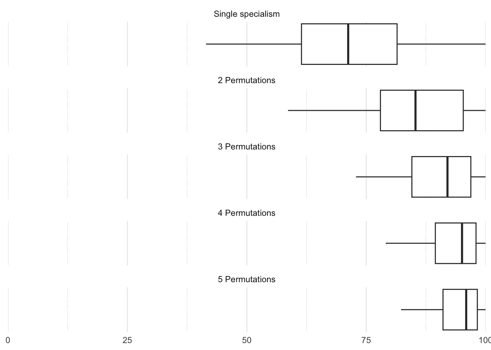
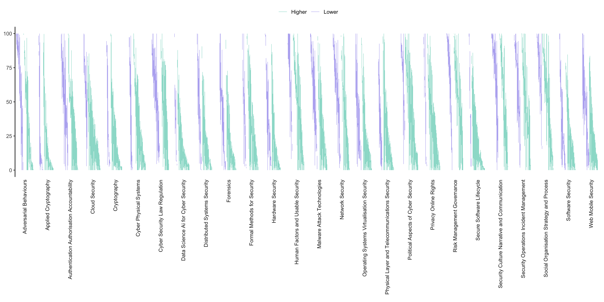
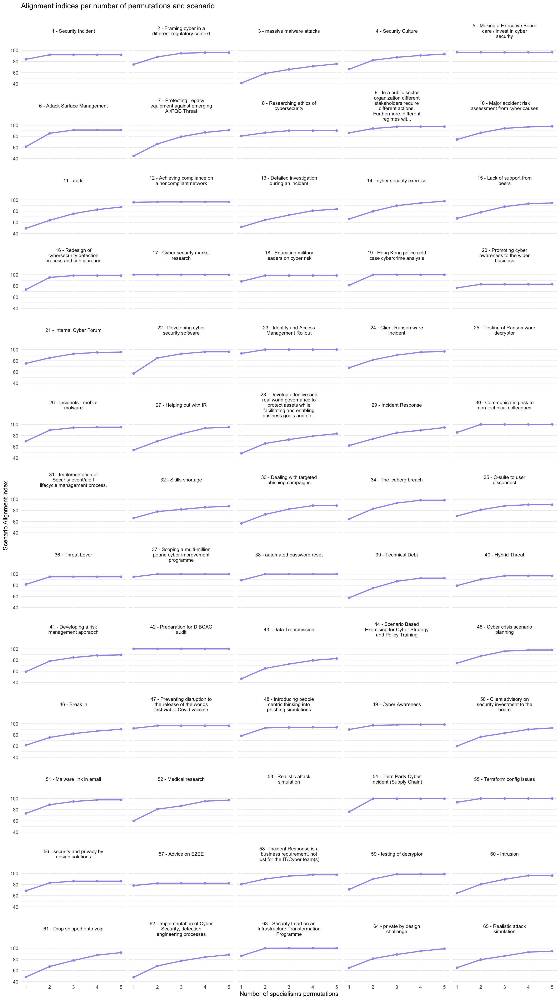
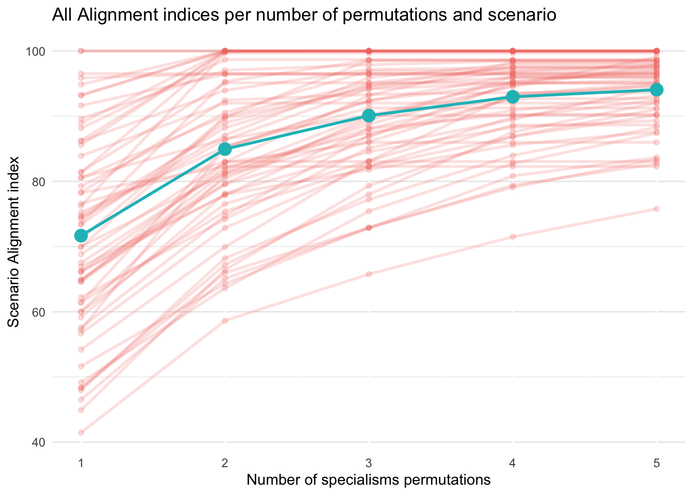

5 Interdisciplinarity
5.1 Interdisciplinary cyber security
In this section we were interested in how one might analyse the interdisciplinary of cyber security practice. Understanding the value of diversity of expertise in cyber security requires a view of the problems that arise in cyber security, and the kinds of combinations of expertise that they require. For organisations, the utility of professional classifications depends on the extent to which it is possible to identify a need for particular kinds of expertise. Understanding the alignment of specialisms with scenarios that are representative of organisations’ practical cyber security problems is one way to approach this. The Cyber Expertise Diversity Survey elicited such profiles from respondents, for a range of scenarios. Qualitative descriptions of these scenarios help us to explore the ways in which scenarios map onto specialisms, in particular:
Which scenarios map straightforwardly onto one specialism
Which scenarios require combinations of specialisms
Which scenarios require significant expertise that is not accounted for by the specialisms
5.2 Data analysis
5.2.1 Respondents and scenarios

This graph plots the difference between the personal alignment metric and scenario alignment metric for each individual respondent. Each line shows the difference between these two responses. Purple shows those responses where personal skills exceed those needed for the scenario described. Teal shows those where the skills needed for the scenario exceed those of the respondent. At a very high level this gives a sense of the breadth and depth of the profession as represented in our sample.
5.2.2 Looking at specialisms alignment with the scenarios
5.2.2.1 Alignment of permutations of multiple specialisms with problem scenarios
We calculated the alignment of the UKCSC specialisms with the scenarios our respondents told us about. We were interested in how alignment scores would increase if we allowed permutations of two or more specialisms. Figure 5.2 shows that, on average, the alignment index increases as we increase the number of permutations (this is, these scenarios are more interdisciplinary). While this could be expected, this is not the case for every scenario, as shown in Figure 5.3, which provides a more nuanced view by displaying how the alignment score changes for every scenario.
In the graphs below, a steep gradient indicates significantly better alignment could be gained through mixed teams of specialists. The alignment score for permutations of specialists is calculated by creating combined ‘combs’. We do this for all possible permutations, up to a maximum of 5, and plot how the maximum alignment for each scenario increases. The sliders for 25, 31, 44 and 53 were left blank, but we include for completeness.


5.2.3 Discussion
5.2.3.1 Lowest alignment scenarios
Scenarios that have lower overall alignment tend to be scenarios where respondents set the combs particularly ‘full’. For instance, for Scenario 3: global mass use of malware, the participant set all sliders to 100 (or nearly). Scenario 13: investigation of a cyber incident: apart from a few (data science, hardware, cyber physical and cryptography), this was deemed to require a very ‘full’ comb. Similarly, Scenario 28: Develop effective and real world governance to protect assets while facilitating and enabling business goals and objectives had a very ‘full’ comb.
5.2.3.2 Most interdisciplinary scenarios
Scenarios that had a steep gradient may be interpreted as particularly interdisciplinary. The adequacy of a team to tackle these scenarios improves significantly if more different specialists are added. Scenario 7: Protecting Legacy equipment against emerging AI/PQC Threat, for instance combined significant elements of ‘hardware security’, ‘cryptography’, ‘network security’, ‘authentication, authorisation and accountability’, and ‘distributed systems security’. Scenarios like this hit a combination of expertise that is not directly associated within existing specialisms. No UKCSC specialism, for instance, is identified with ‘authentication, authorisation and accountability’ and ‘hardware security’. This scenario is about protecting legacy equipment in a CNI context, widely understood to be a key problem area in the profession. In this case the best alignment was achieved as follows:
1 Specialist: Secure System Architecture & Design (Industrial Control Systems)
2 Specialists: Incident response (Industrial Control Systems), Cryptography & Communications Security (Cryptographer)
3 Specialists: Cyber Threat Intelligence, Cryptography & Communications Security (Cryptographer), Secure System Architecture & Design (Industrial Control Systems)
4 Specialists: Cyber Threat Intelligence, Cryptography & Communications Security (Cryptographer), Secure Operations, Secure System Architecture & Design (Industrial Control Systems)”
5 Specialists: Cyber Threat Intelligence, Cyber Security Management, Cryptography & Communications Security (Cryptographer), Secure Operations, Secure System Architecture & Design (Industrial Control Systems)”
Scenario 27: Incident Response was intriguing. It was also very ‘interdisciplinary’ looking at the gradient that we are using for a heuristic. But this is puzzling because there is a specialism called ‘incident response’ that one might presume ought to align well on its own. The respondent had specified the problem scenario including the requirement for very high expertise in ‘authorisation, authentication and accountability’, and quite high in ‘operating systems and virtualization security’. Neither of these are taken to be of even ‘wider’ relevance to incident response. Indeed, the incident response specialism did not feature in any of the best combinations of specialisms for this scenario. While this is highly anecdotal, it does suggest there is more to be understood, and that there could be improvements to the Cyber Careers Framework’s CyBOK mapping to ensure good alignment with practice.
Scenarios 61 and 62 were more specialist problems. Scenario 61 involved a wide spread of expertise, while scenario 62 required high expertise in a relatively high number of areas.
These scenarios are the more ‘naturally’ interdisciplinary cases, where problems need to be addressed that are idiosyncratic, are not neatly contained within standard specialism areas, and will either require individuals with unusual skillsets or else mixed teams.
5.2.3.3 Non-CyBOK expertise
Finally, some scenarios were specified in ways that heavily emphasised the need for non-CyBOK areas of expertise. In these cases, the alignment scores are deceptive, because we cannot calculate which specialists would contribute these skills. Interestingly, one of these cases was 58 - Incident Response is a business requirement, not just for the IT/Cyber team(s).
Incident response is supposed to be captured within the existing specialisms, but this respondent specifies the problem in a way that emphasises expertise that is not considered within the Careers Framework. In particular, the organisational, human factors and culture aspects are deemed particularly important. Again anecdotal, examples like this are suggestive that these areas are perhaps more diverse in their needs, or in the approaches that practitioners take, than is usually recognised. Given that several respondents voiced scepticism about the value of certifications, ensuring alignment of the specialisms with real world problems is likely to be crucial to long term success. This means examining the adequacy of the current framework, examining how problems are changing with new technology and new threats, and examining problem definition more broadly.
5.3 Recommendations
The UK Cyber Security Council’s Cyber Career Framework’s cross-reference to CyBOK should be refined and validated through studies of cyber security problem scenarios.